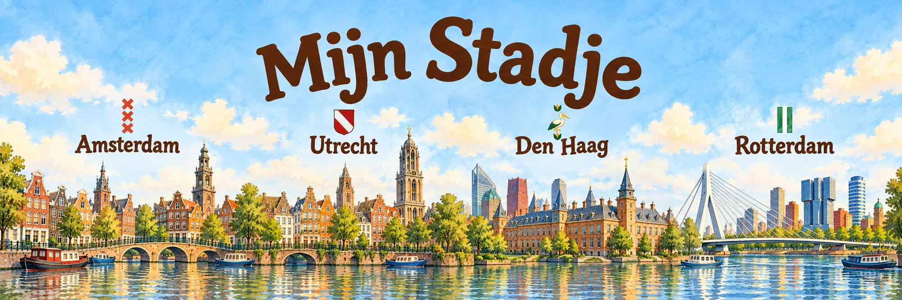

Elke stad verdient een eigen thuiskomstverhaal.
Noah is vier, nieuwsgierig en een tikkeltje eigenwijs — en hij is de vaste gids die je peuter meeneemt langs de mooiste plekken van zijn eigen stad. Boek 1 speelt in Amsterdam; Utrecht, Rotterdam en Den Haag volgen.
Eén beproefd verhaal, per stad opnieuw beleefd
Noah wordt wakker en neemt je mee langs vervoer, sport, werk, natuur, markt, cultuur, feest en thuiskomen — steeds via de eigen route van die stad.
Amsterdam
Bakfiets, grachten, het pontje naar Noord en een stroopwafel op de Albert Cuyp.
Utrecht
Noah's Utrechtse avontuur is in de maak.
Rotterdam
Van de Kop van Zuid tot de Markthal — volgt na Amsterdam.
Den Haag
Strand, duinen en het Binnenhof — nog in ontwikkeling.

Mijn Stadje
Amsterdam
Definitieve boekomslag volgt zodra alle spreads klaar zijn
Noah ontdekt Amsterdam
Op de bakfiets langs de grachten, het pontje naar Noord, hardlopen in het Vondelpark en stroopwafels vers van de kraam op de Albert Cuypmarkt — Noah neemt je peuter mee langs alles wat Amsterdam voor jullie gezin bijzonder maakt.
- Vervoer & bakfiets
- Sport & hobby
- Werk & Zuidas
- Vondelpark
- Albert Cuypmarkt
- Grachtengordel
- Koningsdag
- Thuiskomen
Zodra het boek gedrukt is, staat hier een link naar de Amazon-productpagina. Als deelnemer aan het Amazon Associates-programma verdien ik dan aan aankopen die aan de voorwaarden voldoen.
Acht stadsmomenten, elk met zijn eigen sfeer
Van de bakfiets bij Centraal tot de vlooienmarkt en het buurttentje — een paar spreads uit het Amsterdam-boek.

Spot 'm? De ooievaar verstopt zich op bijna elke pagina — een klein zoekplaatje voor onderweg.


Gemaakt om cadeau te doen
Bij de geboorte
Het cadeau voor vrienden die net ouder zijn geworden — persoonlijker dan een standaard kaartje.
Blijft mooi staan
Stevige hardcover die de eerste jaren moeiteloos doorstaat, ook als peuterhanden meelezen.
Groeit mee
Wordt pas echt leuk zodra je kind kan meewijzen naar de plekken die het al kent.
Om te verzamelen
Eén stad per boek — voor het eigen gezin, of voor elke nieuwe stad waar vrienden wonen.